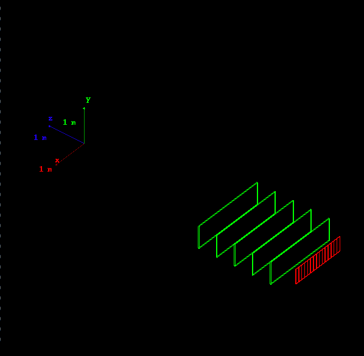

Hands on 2: a simple setup
In this hands on you will learn:
- How to define materials
- How to define a very simple geometry
- How to use command line scoring to record, store and display
simulation results
Note: We do not use Qt GUI for HandsOn2.
The code for this hands-on session
is here (
for your reference, the complete solution
is also availavble here).
Copy the the tar ball to your local area.
$ cd <tutorial> #change to your working directory
$ tar xzf HandsOn2.tar.gz
$ cd HandsOn2
$ ls #Take a look at the files
|
Follow the instructions of Hands On
1 to configure with cmake the Hands-on code and build
it. The name of the executable is G4tut.
Try out the application:
$ cmake .
$ make -j 2 -f Makefile
$ ./G4tut
|
The following should appear:

The default behavior of the application when started without command
line arguments is to start the (G)UI (if enabled).
You should find Idle> prompt on your terminal screen.
Familiarize with the Geant4 UI.
Question 1: Try ls, help and help <UI_command>.
Question 2: Run 10 events.
Idle> /run/beamOn 10
Idle> exit
|
Now run the application with a macro file as command line
argument:
Check the content of the macro file run1.mac, start the application again interactively and
using the help system check the syntax of the few commands used in the
macro file.
Note: Other macro files in the HandsOn2 direcory do not work until you finish all the exercises.